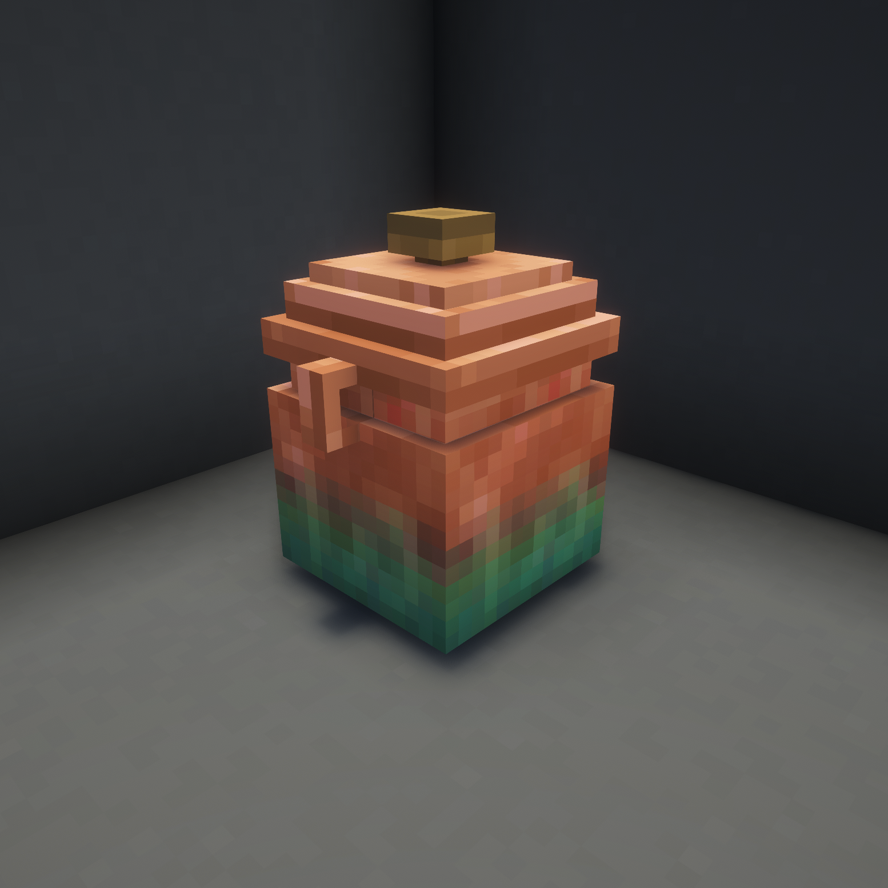
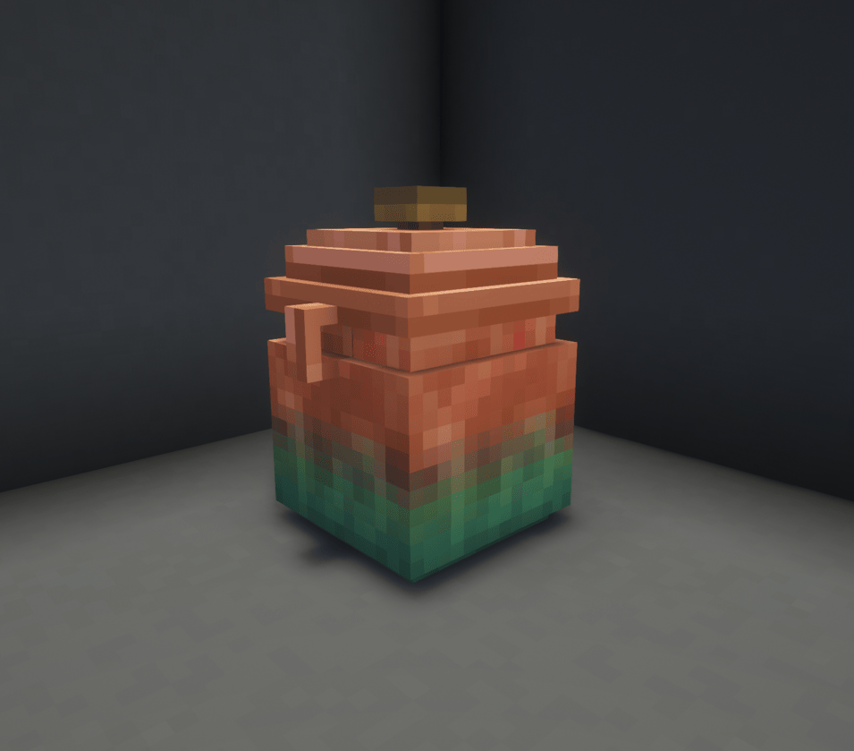

The Vat does long and slow processes like fermenting, curing, and preserving. A working vat will have little gray particles coming off the top, and green sparkles when it has finished a phase - although this does not necessarily mean the whole recipe is finished!
It takes in a fluid, up to 6 ingredients, a catalyst, and a container. Some recipes or phases may require the Lid on, while others may need it off. Pay attention to the recipe; some have multiple phases! An Offset Spatula can be used to change the appearance of the Fermentation Vat.
2.5

